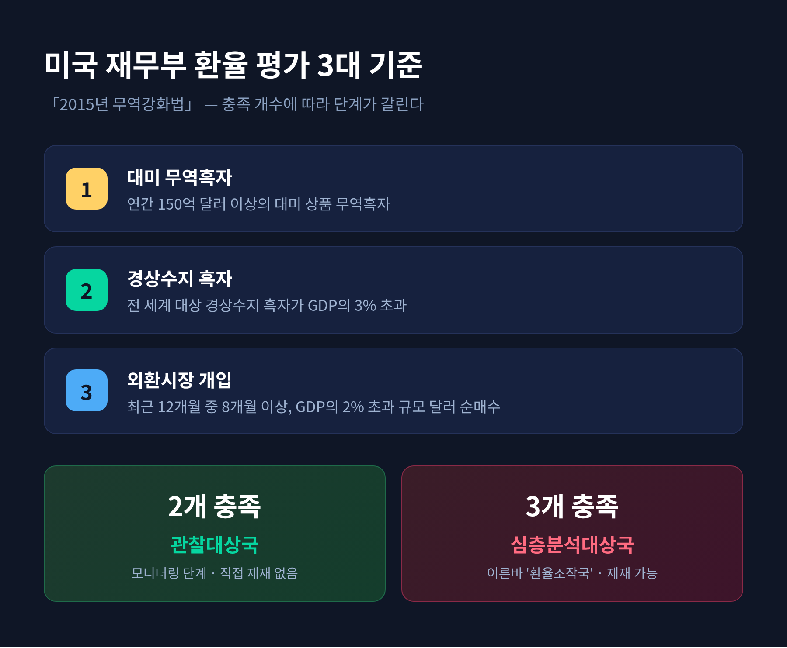
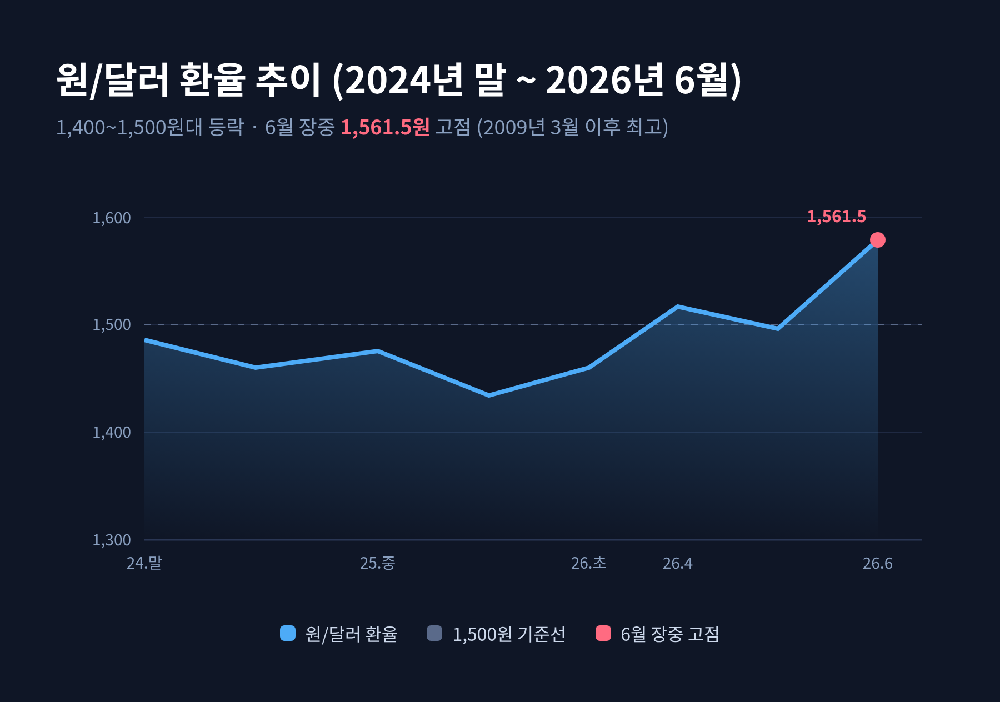
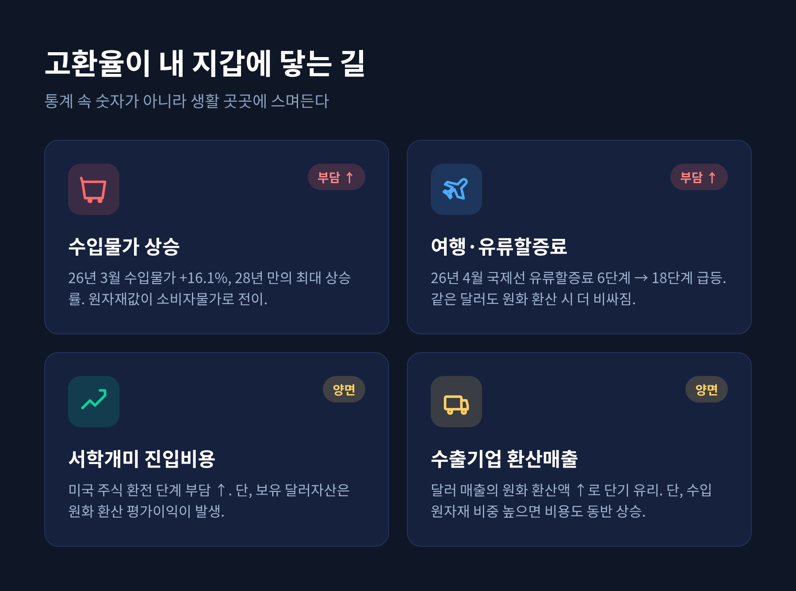

[경제] 환율 관찰대상국 재지정 2026 — 고환율 시대의 구조와 내 자산 지키기

이번 글에서는 2026년 1월 한국이 다시 환율 관찰대상국으로 지정된 사건을 정리해 보겠습니다.
먼저 사실관계와 지정 기준을 짚고, 1,400~1,500원대 고환율의 구조와 그 영향, 그리고 개인이 자산을 지키기 위해 일반적으로 거론되는 방법을 차례로 살펴봅니다.
미리 말씀드립니다. 이 글은 정보 제공이 목적이며, 특정 종목이나 금융상품을 권하는 글이 아닙니다.
한국, 2026년 1월 다시 관찰대상국에 오르다
핵심부터 말씀드립니다.
2026년 1월 30일, 미국 재무부는 반기 환율보고서를 의회에 제출하며 한국을 환율 관찰대상국(Monitoring List)으로 재지정했습니다.
이번 명단에는 한국을 포함해 총 10개국이 올랐습니다. 중국, 일본, 대만, 태국, 싱가포르, 베트남, 독일, 아일랜드, 스위스가 함께 이름을 올렸습니다.
재무부의 평가는 분명했습니다. 2024년 말 1,500원에 육박했던 원/달러 환율이 한국의 강한 경제 기초여건에 부합하지 않는다는 것입니다. 한국의 경상수지 흑자가 2025년 6월까지 4개 분기 동안 GDP의 5.9%를 기록했고, 이는 전년 동기 4.3%에서 오른 수치라고 밝혔습니다.
다만 한 가지는 짚어둘 필요가 있습니다. 외환시장 개입에 대해서는 한국의 개입이 "대체로 대칭적"이었다고 평가했습니다. 일방적으로 원화를 약하게 만드는 개입이 아니었다는 뜻입니다. 오히려 한국은 2024~2025년 원화 약세 국면에서 달러를 팔아 원화를 방어하는 쪽으로 움직였습니다.
이번이 처음은 아닙니다.
한국은 2016년 4월 명단에 처음 오른 뒤, 2023년 11월 약 7년 만에 빠졌습니다. 그러나 2024년 11월 다시 포함됐고, 그 뒤로 3회 연속 지정이 이어지고 있습니다. 일부 보도는 이를 트럼프 행정부의 '미국 우선주의' 통상 압박이라는 맥락에서 읽습니다.
관찰대상국은 무엇이고, 환율조작국과는 어떻게 다른가
미국 재무부는 「2015년 무역강화법」에 근거해 주요 교역국의 환율 정책을 평가합니다. 다음 세 가지 기준 가운데 일정 개수를 충족하면 명단에 오릅니다.

| 기준 | 내용 |
|---|---|
| ① 대미 무역흑자 | 연간 150억 달러 이상의 대미 상품 무역흑자 |
| ② 경상수지 흑자 | 전 세계 대상 경상수지 흑자가 GDP의 3% 초과 |
| ③ 외환시장 개입 | 최근 12개월 중 8개월 이상, GDP의 2% 초과 규모로 달러를 순매수 |
두 가지를 충족하면 관찰대상국, 세 가지를 모두 충족하면 심층분석대상국(흔히 '환율조작국'으로 부릅니다)이 됩니다.
한국은 ①과 ②, 즉 무역흑자 약 520억 달러와 경상흑자 GDP 5.9%로 두 요건을 충족했습니다. ③ 외환시장 개입 요건은 충족하지 않았습니다. 앞서 말씀드린 대로, 원화 약세를 막으려 달러를 '팔았기' 때문입니다.
그렇다면 관찰대상국이라는 꼬리표는 얼마나 무거운 것일까요.
관찰대상국은 "주의가 필요하다"는 경고이자 모니터링 단계입니다. 직접적인 제재는 없습니다. 재무부의 면밀한 감시 대상이 될 뿐입니다. 반면 환율조작국은 명확한 증거를 바탕으로 지정되며, 양자·IMF 협의 요청이나 미국 정부 조달 참여 제한, 개발금융 제한 같은 제재로 이어질 수 있습니다.
여기서 평가가 갈립니다.
경향신문 등은 당장의 직접 제재가 없어 실질 영향은 제한적이라고 봅니다. 반면 한국무역협회는 관세·통상 협상이 동시에 진행되는 지금 국면에서는 이 지정이 협상 카드로 쓰일 수 있어 과거보다 부담스럽다고 평가합니다. 어느 한쪽이 정답이라고 단정하기는 이릅니다.
1,400~1,500원대, 고환율은 왜 이어지나
환율 수치는 시점과 장중·종가에 따라 편차가 큽니다. 그래서 범위로 보는 편이 안전합니다.
2024년 말 1,500원에 육박했던 원/달러 환율은 2025~2026년 내내 1,400~1,500원대를 오갔습니다. 2026년 6월 6일 야간거래에서는 장중 1,561.5원까지 치솟아 2009년 3월 이후 최고치를 찍었습니다.
전망도 한 방향이 아니었습니다. 2026년 주요 은행·증권사 전망치는 1,300원대 후반에서 1,400원대 후반에 모여 있었지만, 신한은행은 하반기 고점 1,510원을, 한국투자증권은 연 고점 1,500원을 제시했습니다.

배경에는 여러 요인이 겹쳐 있습니다.
먼저 한미 금리 격차입니다. 미국의 상대적 고금리가 달러 수요를 자극합니다.
다음은 외국인 자본 유출입니다. 외국인이 국내 주식을 팔고 달러로 바꿔 빠져나가면서 달러 수요가 급증했습니다. 외국인은 2026년 5월에만 코스피를 44조 원 넘게 순매도했고, 6월 들어서도 19~20거래일 연속 순매도를 이어갔습니다.
구조적 수급 불균형도 빼놓을 수 없습니다. 달러 공급보다 수요가 많은 상황이 좀처럼 풀리지 않았습니다. 여기에 한미 정부가 합의한 3,500억 달러 규모 대미 투자 펀드가 본격 가동되면 달러 수요가 더 늘 수 있다는 우려, 2026년 약 728조 원에 이르는 사상 최대 예산과 적자국채 발행 부담, 코로나 이후 이어진 통화량 증가도 원화 가치 하락 요인으로 거론됩니다.
2026년에는 변수가 하나 더 있었습니다. 4월 중동 전쟁 여파로 국제유가와 환율이 동시에 급등했습니다.
한 가지는 분명히 해두겠습니다. 이 국면은 '달러 강세'라기보다 '원화 약세' 성격이 강하다는 해석이 많습니다. 같은 현상을 보더라도 어디에 무게를 두느냐에 따라 풀이가 달라지는 셈입니다.
고환율이 내 지갑에 닿는 길 — 물가, 여행, 해외투자
고환율은 통계 속 숫자로만 머물지 않습니다. 생활 곳곳에 스며듭니다.
먼저 물가입니다. 2026년 3월 수입물가지수는 169.38로 전월 대비 16.1% 급등해, 1998년 1월 이후 28년 2개월 만의 최대 상승률을 기록했습니다. 원유·곡물·에너지 같은 수입 원자재 가격이 환율 상승분만큼 비싸지면, 그 부담은 결국 소비자물가로 옮겨갑니다. 수입물가는 원화 약세 영향으로 3개월 연속 오른 바 있습니다.
여행과 유학 비용도 무거워집니다. 같은 달러 가격이라도 원화로 환산하면 더 비싸지기 때문입니다. 2026년 4월 국제선 유류할증료는 전월 6단계에서 18단계로 수직 상승했습니다. 항공유 가격이 뛴 데다, 달러로 계산되는 유류세 특성상 고환율이 부담을 더 키웠습니다. 고환율이 길어지면 소비심리 위축과 신규 예약 둔화, 단거리·가성비 여행지 쏠림이 전망됩니다. 다만 한국을 찾는 외국인 관광은 오히려 유리해지는 면이 있습니다.

해외투자, 이른바 서학개미의 셈법도 달라집니다. 고환율기에 미국 주식을 사면 환전 단계에서 달러를 비싸게 사야 하므로 진입 비용이 커집니다. 다만 이미 들고 있는 달러 자산은 환율이 오르면 원화 환산 평가이익이 생깁니다. 동시에 개인투자자들이 미국 주식을 꾸준히 사들이는 것 자체가 달러 수요를 늘려 환율을 밀어 올리는 요인으로도 작용합니다.
기업 사정도 한 갈래가 아닙니다.
수출기업은 같은 달러 매출의 원화 환산액이 늘어 단기적으로는 유리할 수 있습니다. 그러나 수입 원자재 비중이 높으면 비용도 함께 오릅니다. 내수·수입 의존 기업과 가계는 부담이 커집니다. 좋기만 한 환율도, 나쁘기만 한 환율도 없는 셈입니다.
고환율기에 자산을 지키는 일반적인 방법들
지금부터는 일반적으로 소개되는 개념과 방법론입니다.
다시 한번 분명히 합니다. 특정 상품이나 종목 추천이 아닙니다. 환헤지든 달러자산이든 비용과 손실 위험이 따르므로, 본인의 상황과 기간, 목표에 맞는 판단이 필요합니다.
첫째, 통화 분산입니다. 원화 자산에만 집중하면 원화가 약해질 때 실질 구매력도 함께 떨어집니다. 자산의 일부를 달러로 나눠 두면 환율 변동 충격을 분산할 수 있다는 것이 기본 아이디어입니다. 원화가 강할 때 달러를 적립하고 약할 때 활용하는 '시점 분산'도 자주 언급됩니다.
둘째, 환헤지(H)와 환노출(UH)의 이해입니다. 환헤지형은 환율 변동 위험을 줄여 주지만 헤지 비용이 듭니다. 투자기간 안에 원화가 강세로 돌아설 것으로 본다면 유용합니다. 환노출형은 환율 변동을 그대로 반영합니다. 헤지 비용이 없고, 장기·위험자산 투자나 원화 약세 지속 전망 시 선호되는 경향이 있습니다. 전망의 강도에 따라 두 유형의 비중을 조절하는 방식이 거론됩니다.
셋째, 리밸런싱입니다. 원화 자산과 환율 상승 시 이익이 나는 자산을 일정 비중으로 나눠 두고, 분기나 반기마다 원래 비중으로 되돌리는 방법입니다. 가장 직관적인 위험관리 전략으로 소개됩니다.
목적과 기간에 따라 거론되는 도구도 있습니다. 단기·초보라면 외화 RP나 단기 달러 금리 연동 상품처럼 짧은 만기와 이자 수취 개념이, 유학·이민처럼 목적과 기간이 분명하다면 달러 보험 같은 장기 도구가 언급됩니다. 다만 이들은 각각 비용과 환위험, 중도해지 손실 같은 단점이 있어 단순 나열일 뿐 추천이 아닙니다.
마지막으로, 가장 중요한 전제 하나를 남깁니다.
환율 방향은 누구도 정확히 맞히기 어렵습니다. 그래서 다수의 자료가 분산과 분할, 장기 관점을 강조합니다. 고환율 정점에서 무리하게 달러를 몰아 사는 것은 오히려 위험할 수 있다는 시각도 분명히 존재합니다.
정리하면 이렇습니다.
한국의 환율 관찰대상국 재지정은 직접 제재가 아니라 모니터링 단계이지만, 통상 협상과 맞물린 지금 국면에서는 가볍게만 볼 일도 아닙니다. 그 바탕에는 원화 약세 성격이 강한 1,400~1,500원대 고환율이 깔려 있고, 그 여파는 물가와 여행, 투자로 우리 일상까지 번집니다.
"환율은 맞히는 것이 아니라 견디는 것이다." 예측을 좇기보다 분산과 장기 관점으로 충격을 줄이는 편이 현실적입니다.
다만 어떤 선택이든, 투자 결정과 그 결과는 결국 본인의 몫입니다.
고환율의 끝을 묻는다면, 정확한 시점은 누구도 답할 수 없다고 말씀드리겠습니다. 그러나 흔들림 속에서도 흔들리지 않을 준비는, 지금부터 해 둘 수 있습니다.